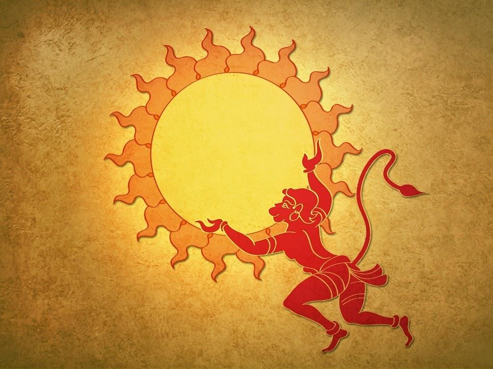

CAMP HANUMAN TEMPLE
Go Back To Gujarat

- It is one of the biggest Hanuman temples of India
- This temple was owned by Smt. Lalitaben Dave and Smt. Shivagangaben Trivedi.
- The temple is built in Dravidian architectural style.
- A gold plated statue of Sri Hanuman is nestled in the inner sanctum of the temple.
- Endowed with godly powers, Shree Hanuman was a military leader of the monkey army from Kiskinda, who aided Lord Rama in his quest to retrieve his kidnapped wife Sita from the demon king Ravanna in the Hindu epic tale Ramayana, written by the Hindu sage Valmiki.